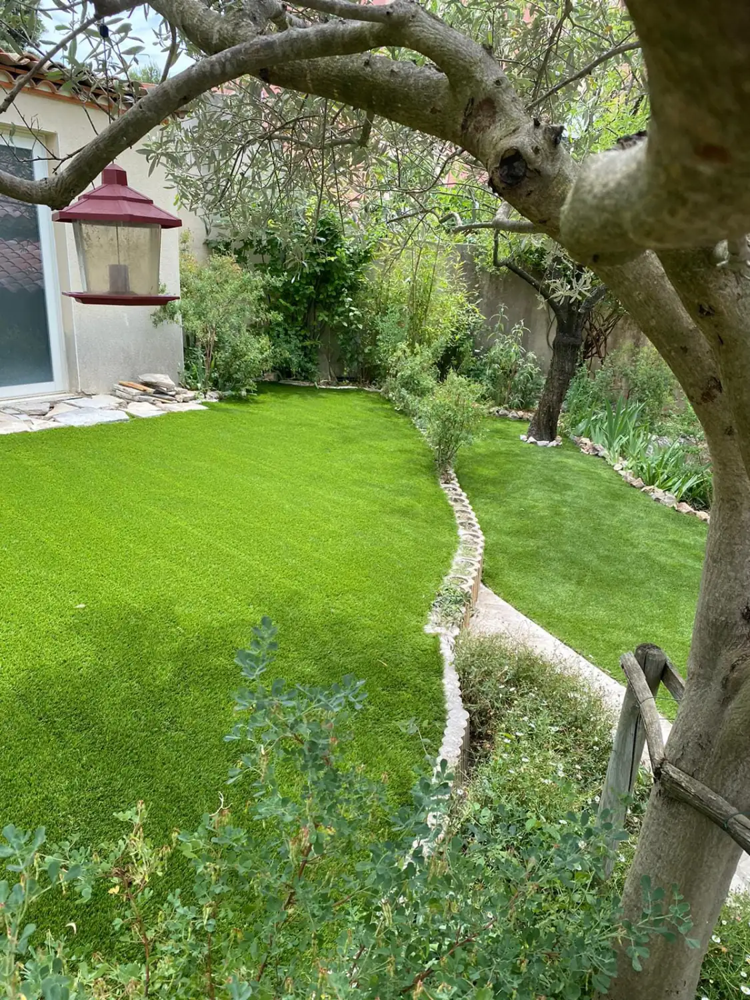

Aménagement minéral
Allées, cours, paillages minéraux, pas japonais, bordures acier qui tiennent le gazon.

AccueilGazon & pelouse
Saint-Cyr Services
Semis, plaques ou synthétique. On regarde le terrain, l’ombre et l’eau dont vous disposez, puis on vous dit ce qui tient chez vous.
Naturel ou synthétique
Le choix se joue sur quatre points. Le soleil, l’eau, l’usage du jardin, et le temps que vous voulez y passer.
Le gazon naturel se sème ou se pose en plaques. Le semis est moins cher au mètre carré, mais il faut attendre : quelques semaines avant la première tonte, une saison avant un tapis dense. Les plaques, c’est vert le jour même, à condition d’arroser fort le temps que les racines descendent. Après, il y a du travail : tonte, arrosage l’été, scarification au printemps, engrais. En échange, le sol reste vivant et absorbe la pluie.
Le gazon synthétique coûte plus cher à poser, et presque rien à entretenir. Ni tonte, ni arrosage, ni engrais. C’est souvent la seule réponse là où l’herbe refuse de pousser : sous un olivier, au pied d’un mur nord, dans une cour fermée, sur une bande étroite le long de la terrasse. Deux choses à savoir : il chauffe en plein été, et le sol dessous ne vit plus. On mélange souvent les deux — du synthétique là où ça passe mal, du semé sur la grande surface.
Ombre, chien, sol qui retient l’eau, arrosage coupé l’été : dites-le avant le devis. C’est ça qui décide, pas la surface.

Le détail
Un sol bosselé se voit toute l’année. La préparation prend plus de temps que la pose.
Réalisations
Photos prises sur place, une fois le chantier fini. Cliquez pour agrandir.
Questions fréquentes
Combien de soleil sur la zone ? En dessous de quatre heures par jour, le semis reste clairsemé. Est-ce que vous pouvez arroser l’été ? Sans eau, une pelouse jaunit en juillet. Et l’usage compte : une cour piétinée tous les jours s’use vite en naturel.
L’automne est la bonne fenêtre pour le semis. Le sol est encore chaud, la pluie arrose à votre place, les mauvaises herbes poussent moins. Le printemps marche aussi, à condition d’arroser jusqu’aux fortes chaleurs. Les plaques se posent presque toute l’année, hors gel et hors canicule. Le synthétique, quand vous voulez, tant que le support n’est ni gelé ni détrempé.
Ce qui se voit, c’est la pose, pas le produit. Deux lés posés en sens inverse donnent deux verts différents à la lumière. Une jonction mal collée finit par bâiller. Autour d’un tronc, une découpe approximative laisse un jour de plusieurs centimètres. Et si le support n’est pas assez compacté, ça creuse au bout d’un an.
On surveille ces quatre points. Et on prend des modèles à brins mélangés, en hauteurs et en teintes, plutôt qu’un vert uniforme.
Le synthétique tient. Pas de boue rapportée dans la maison, pas de trous creusés. Les déjections se ramassent, l’urine se rince au jet. C’est pour ça que le drainage compte : dossier perforé, lit de sable perméable, sinon l’odeur stagne. En naturel, les passages répétés marquent ; un regarnissage au printemps rattrape la zone.
La suite
Une pelouse vient rarement seule. Il y a l’allée, la bordure, le massif à côté.
Allées, cours, paillages minéraux, pas japonais, bordures acier qui tiennent le gazon.

Haies au cordeau, oliviers en nuage, fruitiers, palmiers. Les sujets qui bordent la pelouse.

Massifs méditerranéens, haies persistantes, grands sujets posés au camion-grue.

Plages de piscine, terrasses bois ou carrelées, écrans de verdure autour du bassin.

Tonte, taille, débroussaillage, désherbage. Déchets verts emportés.
Le déplacement et le devis ne coûtent rien. On passe voir le terrain, et vous recevez le devis détaillé.